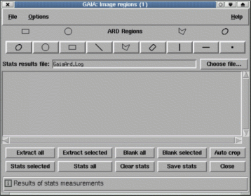

The image regions toolbox allows you to draw overlay shapes on your image and then either extract or remove them, putting the results into a new temporary image (which will be displayed in a new window by default), or you can get basic statistics about the pixel values in the regions.
The regions that are drawn can also be saved into simple text files and either redrawn (by re-reading the file) or used with other "ARD" aware programs (ARD stands for Ascii Region Definition), such as found in the Starlink packages KAPPA (SUN/95) and CCDPACK (SUN/139).
To activate the toolbox select the "Image regions..." item in the "Image-Analysis" menu of window displaying your image.
Some help with using the toolbox is available.